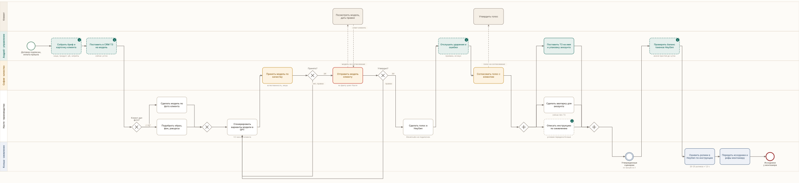
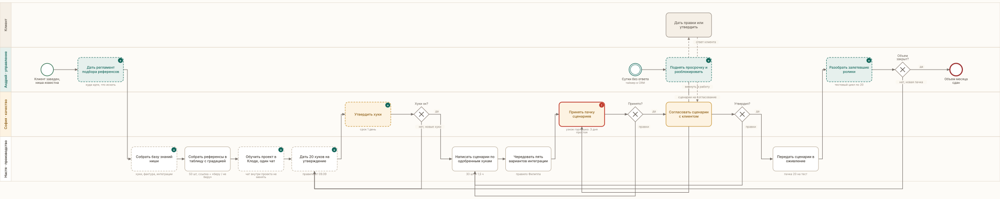

Схема
100%
Архив процессов · BPMN 2.0
Как производство работает на самом деле, а не как записано в таблице. Каждый процесс это текстовое описание под плюсом и схема в нотации BPMN 2.0 с дорожками по ролям. Схему можно открыть на весь экран или скачать файлом и открыть в bpmn.io, Camunda или draw.io.
Персонаж, голос, аватарка аккаунта. Один раз на клиента, дальше на этом штампуются все ролики месяца.
разобран с Настей 09.09Референсы, хуки, тексты, интеграции. По оценке Насти это 65 процентов результата.
разобран с Настей и Софией 09.09Кирилл: субтитры, перекрытия, вставки, передача на выкладку. Утверждает София.
в очереди на разборАккаунты, прогрев, ежедневная выкладка, ответы на комментарии, боты по кодовому слову.
настоящий потолок компанииНедельный сбор цифр и отчет клиенту. Программа за 20 000 в месяц умерла, считается руками.
процесса нетПлан команде, ежедневный контроль, себестоимость и нагрузка, оптимизация.
строится в CRMДоговоры и акты, добиться ТЗ, недельный созвон, продать следующий месяц.
в очереди на разборПервичный созвон, оффер, договор и счет, бриф. В таблице у всех четырех строк ответственного не было.
забрал АндрейОт подписанного договора до исходников у монтажера. Создание персонажа делается один раз на клиента, дальше идет поток роликов.
Создание виртуального персонажа: внешность, голос и аватарка для аккаунта. Делается один раз на клиента и дальше не меняется, поэтому ошибка здесь стоит месяца работы. По оценке Насти модель, голос и качество дают 35 процентов результата, остальные 65 приходятся на сценарий.
Ключевой фактор провала она назвала прямо: неестественность. Плохая картинка. Когда модель неестественная, максимально пластиковая, и голос. Голос там особенно выдаёт. Если выдаётся, что это ИИ, во-первых, Instagram это не продвигает. Во-вторых, люди это не смотрят.
| Задача | Кто |
|---|---|
| Поставить ТЗ на разработку модели | София |
| Поставить ТЗ на имя и упаковку аккаунтов | Андрей |
| Сделать модель | Настя |
| Утвердить модель и внести правки | София |
| Согласовать модель с клиентом и передать правки | София |
| Сделать голоса | Настя |
| Согласовать с клиентом голоса | София |
| Оживлять моделей в HeyGen | Ксюша |
| Отслушивать на предмет ошибок в озвучке | Андрей |
| Передать исходники в монтаж | Настя |
В исходной таблице строка про оживление стояла с пометкой «делала Настя, но сейчас хз». Роль закрыта решением 08.09: оживление уходит Ксюше, Настя обучает.

От базы знаний ниши до сценариев, ушедших в оживление. Здесь же находится узкое горлышко всей компании.
Контент, на котором держится результат клиента. По оценке Насти сценарий дает 65 процентов залета, и этому есть техническая причина: HeyGen не умеет повторять движения, аватар статичный. У нас здесь чисто статичный аватар, который сидит, что-то рассказывает. Значит визуальными приемами удерживать зрителя нечем, все держится на тексте.
| Задача | Кто |
|---|---|
| Дать ТЗ на написание сценариев | София |
| Организовать процесс сбора референсов | Андрей |
| Написать сценарии | Настя |
| Внести правки в сценарии | София |
| Согласовать сценарии с клиентом | по таблице Настя |
| Передать сценарии в оживление | Настя |
Одна строка таблицы не подтвердилась на созвоне. Согласование сценариев с клиентом записано на Настю, но она сознательно от него отказалась: писать готова, отвечать перед клиентом нет. Причина названа честно: не хватает опыта. Значит эта строка остается на Софии, и в схеме она стоит в ее дорожке.
Приемка остается за Софией, потому что вкус это ее зона по соглашению. Но объем приемки падает: она смотрит хуки, а не тексты целиком, и делает это по стандарту, а не заново каждый раз. Дальше по этому же стандарту заходит второй сценарист, и найм перестает упираться в человека, который умеет писать «как София».

Настоящий потолок компании: схема один публикатор на один аккаунт с отдельным устройством. На трех клиентов это 15-30 человек, которых надо нанимать и контролировать.
приоритет 1Это то, что клиент видит каждую неделю, и то, чего сейчас нет. Программа умерла, цифры считаются руками.
приоритет 2Процесс работает и человек заменяем. Разбирается ради нормативов и передачи второму монтажеру.
приоритет 3Менеджмент собирается в CRM по ходу первого общего клиента, продажи описываются на своей воронке.
по ходу клиента